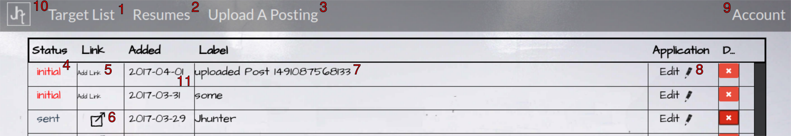

Looks like this is still to come. Meanwhile send us a message asking your question.
Contact Us
Target List

Upload Posting
As Image:
As Pdf:
Side By Side Editor
Select A Res
Associates a copy of the selected resume with the current target job posting
Save
Style Options
Options to change the fonts, secondary color, included sections, and showing or hiding an uploaded image
Import From Master
Provides a list of the content included in the Master Resume (set through the Resumes view/edit page) from which you can select and import into the active target associated resume.
Adjust Post View
Allows you to temporarily crop the description view to better see the requirements and/or description of the target job posting
Resumes
Create/Edit a Resume
Allows you to create and edit a resume free of any association with a particular target job posting
Set Master
Sets the active resume as master.
This allows you to use the Import From Master in the side by side editor to select and import individual items into a target associated resume.
Save
Save the active resume
Download
Create, preview and download a pdf of the active resume
View
view and/or download a previously created pdf of the active resume. Good for comparing edits